382万回
NEW
382万回
NEW
激しく戦う犬と猫を『スローで撮ってみた』結果…382万再生された『まさかの光景』に爆笑する人が続出「気合いは感じるｗ」「顔でバトルｗ」
ライブドアニュース · 05 Nov
382万回
NEW
ライブドアニュース · 05 Nov
 350万回
NEW
350万回
NEW
ねとらぼ · 05 Nov · @mamesuke3333 ♥173,515
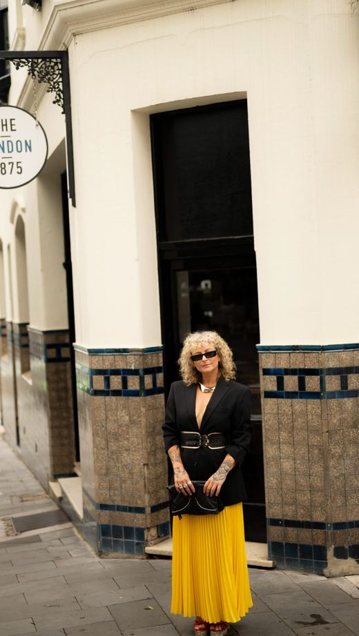
194万回 NEWニコニコニュース · 05 Nov · @oro_fashionhouse ♥113,272
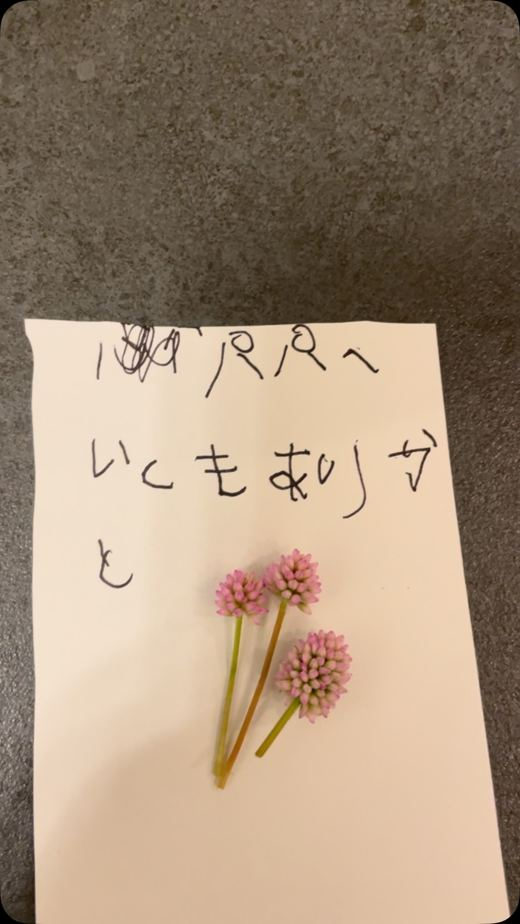
191万回 NEWねとらぼ · 05 Nov · @shoka_forestry ♥67,187
Excite エキサイト · 05 Nov
 172万回
172万回
ねとらぼ · 04 Nov · @mi_chan.asobi ♥12,316
アットプレス · 05 Nov · @aurora__fujii ♥1,256
Excite エキサイト · 04 Nov
ねとらぼ · 04 Nov · @chimaki.cafe ♥9,089
千葉日報オンライン · 04 Nov · @fujikawaguchiko ♥5,691
 42万回
NEW
42万回
NEW
ねとらぼ · 05 Nov · @mar1990_ ♥5,840
 42万回
NEW
42万回
NEW
ニコニコニュース · 05 Nov · @mar1990_ ♥5,840
Unisba Media · 04 Nov
Unisba Media · 04 Nov
Yahoo!ニュース · 05 Nov
TRILL · 05 Nov
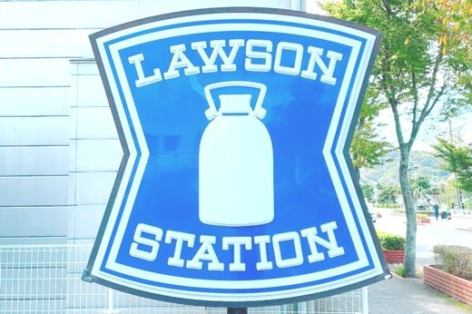
NEWBuzzFeed · 05 Nov
GourmetBiz · 05 Nov
めざましmedia · 05 Nov
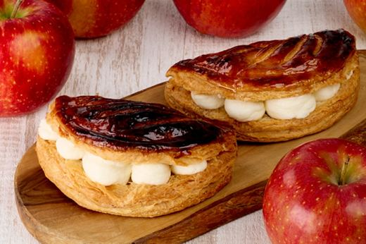
NEWLASISA · 05 Nov
 305万回
NEW
305万回
NEW
Yahoo!ニュース · 05 Nov · @yuririn_06 ♥2,333
ねとらぼ · 05 Nov · @mar1990_ ♥5,840
ライブドアニュース · 05 Nov
MAQUIA · 05 Nov
ELLEgirl · 05 Nov · @sofiamcoelho ♥54,166
 NEW
NEW
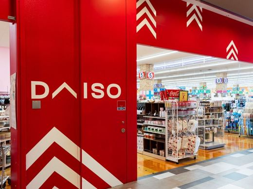
NEWTRILL · 05 Nov
ｄメニューニュース · 05 Nov
Yahoo!ニュース · 05 Nov
Infoseek · 05 Nov
MAQUIA · 05 Nov
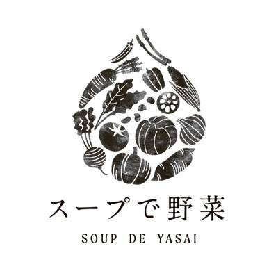
11/06 07:50 🗼 神奈川株式会社はなまるフードサービスのプレスリリース 関係者各位 2026年11月6日 株式会社はなまるフードサービス 神奈川の農商工
株式会社マイクロマガジン社のプレスリリース 美味しそうな100種類の「おやつ」に思わずお腹が鳴ってしまう！ 親子で何度も繰り返し
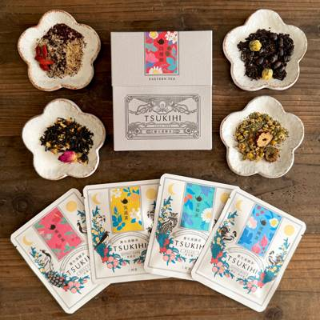
11/05 15:37 🗼 東京株式会社三柑堂のプレスリリース 薬膳クッキーのtsukihiから、素材が織りなす穏やかな香りと心地よい余韻を楽しめる、4つの味わ
株式会社オールハーツ・カンパニーのプレスリリース ～「パステル セレオ八王子店」を2026年11月26日（木）にグランドオープン
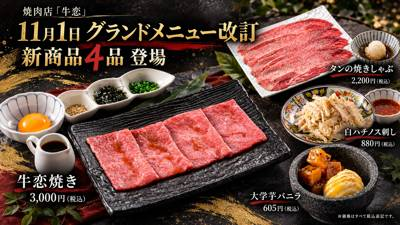
11/05 12:41 🗼 東京株式会社K-KING foodsのプレスリリース メス牛のザブトンを使用した『牛恋焼き』や大判の『タンの焼きしゃぶ』が新登場。肉
株式会社エルティーアールのプレスリリース ハロウィン・タウン仕様の特別なクリスマスを楽しめるスペシャルカフェが、東京・表参道で初
チロルチョコ株式会社のプレスリリース 2026年11月19日（木）より全国のセブン‐イレブンで順次発売 チロルチョコ株式会社（東
ベネリック株式会社のプレスリリース セットメニューのアートオレは、たくさんのドーナツを目の前に満面の笑みを浮かべるジョージの特別
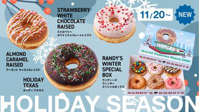
11/05 12:00 🗼 東京グリット・インターナショナル株式会社のプレスリリース ～2026年11月20日（金）発売～ グリット・インターナショナル株式会
モエ ヘネシー ジャパン株式会社のプレスリリース 全国主要百貨店等で順次発売中 モエ ヘネシー ジャパン株式会社（東京都千代田区
河淳株式会社のプレスリリース 11月1日（日）より予約受付中。12月23日（水）～25日（金）は当日販売限定のケーキも登場 衣食
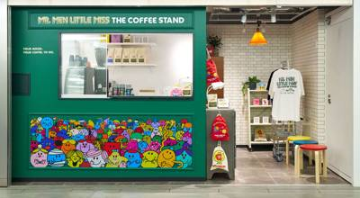
11/05 11:00 🗼 渋谷株式会社サンリオのプレスリリース 〜今日の“MOOD”を楽しむ、英国の街角を思わせる空間〜 © 2026 THOIP 株式会社
B-R サーティワン アイスクリーム株式会社のプレスリリース 発売日：2026年11月13日（金）～ B-R サーティワン ア
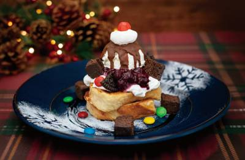
11/05 11:00 🗼 横浜株式会社日影茶屋のプレスリリース 世界各地のスイーツをフレンチトーストにアレンジする人気企画が復活 濃厚ブラウニー、パリパリチョ
森永製菓株式会社のプレスリリース 森永製菓株式会社（東京都港区芝浦、代表取締役社長COO・森 信也）は、「ハイチュウ＜ストロベリ
株式会社ビーケー・ジャパンのプレスリリース 【期間・数量限定】11月6日（金）～ 【同時発売、期間限定】「特製ガーリックソース」
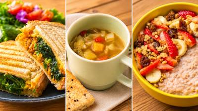
11/05 10:30 🗼 東京Ｆ＆Ｐジャパン株式会社のプレスリリース スムージーといえば、冷たい飲みもの。そんなイメージのあるスムージーの専門店が、温かい食事
 11/06 08:10
❓ 不明
11/06 08:10
❓ 不明
日本ピザハット株式会社のプレスリリース 〜2026年11月8日（日）〜10日（火）の3日間限定！サイドメニューには「とろたま ご
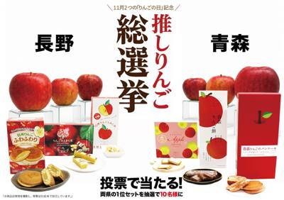
11/05 17:00 🚄 青森株式会社タカチホのプレスリリース ２つの「りんごの日」をつなぐInstagram投票企画。青森と長野の今年の新商品１位商品を食べ
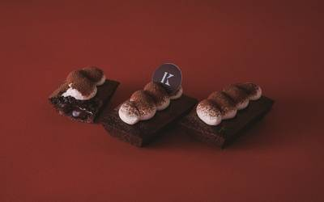
11/05 17:00 ❓ 不明きのとやのプレスリリース KINOTOYA BAKE 丸井今井店 冬限定スイーツ 株式会社きのとや（本社：札幌市、代表取締役社長
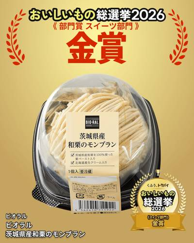
11/05 16:30 🚄 茨城株式会社ライフコーポレーションのプレスリリース プライベートブランド「BIO-RAL」の本格スイーツ！シリーズ第3弾も新発売♪
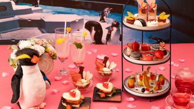
11/05 16:23 🚄 札幌株式会社西武・プリンスホテルズワールドワイドのプレスリリース 「AOAO SAPPORO」×「札幌プリンスホテル」販売期間：20
エコール・クリオロ株式会社のプレスリリース エコール・クリオロ株式会社（本社：東京都板橋区、代表取締役：久保田令）が展開するクリ
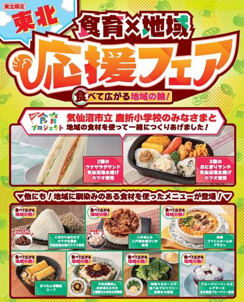
11/05 15:00 🚄 東北株式会社セブン‐イレブン・ジャパンのプレスリリース ～地域の子どもたちのアイデアを生かした商品をはじめ、東北で馴染みのある味わい
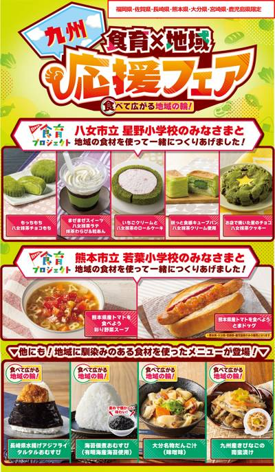
11/05 15:00 🚄 九州株式会社セブン‐イレブン・ジャパンのプレスリリース 〜地域の子どもたちのアイデアを生かした商品をはじめ、九州エリアで馴染みのある
株式会社セブン‐イレブン・ジャパンのプレスリリース ～地域の子どもたちと開発した商品をはじめ、新潟県・北陸で馴染みのある味わいを
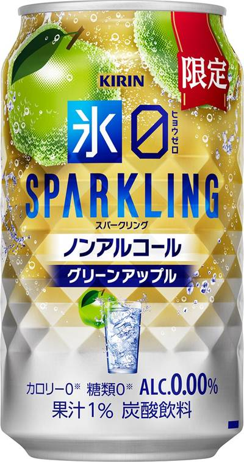
11/05 15:00 ❓ 不明キリンホールディングス株式会社のプレスリリース キリンビール株式会社（社長 堀口英樹 以下、キリンビール）は、ノンアルコール・
株式会社セブン‐イレブン・ジャパンのプレスリリース ～地域の子どもたちのアイデアを生かした商品をはじめ、北関東で馴染みのある味わ
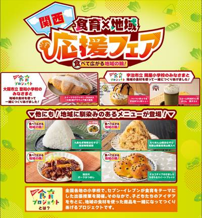
11/05 15:00 🚄 関西株式会社セブン‐イレブン・ジャパンのプレスリリース 〜大阪市立聖和小学校・宇治市立岡屋小学校の子どもたちのアイデアを生かした商品
株式会社セブン‐イレブン・ジャパンのプレスリリース ～地域の子どもたちのアイデアを生かした商品をはじめ、一都三県で馴染みのあるメ
株式会社セブン‐イレブン・ジャパンのプレスリリース ～地元小学校の子どもたちのアイデアを生かした商品をはじめ、沖縄県の食材を使用
株式会社セブン‐イレブン・ジャパンのプレスリリース 〜地域の小学校の子どもたちと開発した商品をはじめ、岡山県・四国の食材を生かし
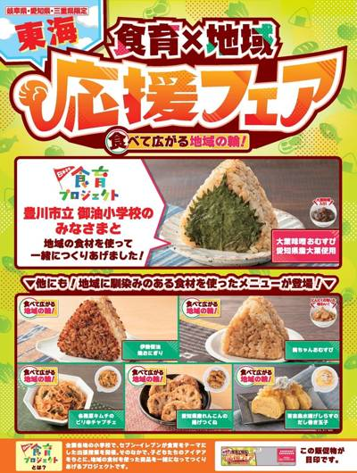
11/05 15:00 🚄 岐阜株式会社セブン‐イレブン・ジャパンのプレスリリース ～地域の子どもたちのアイデアを生かした商品をはじめ、東海エリアで馴染みのある
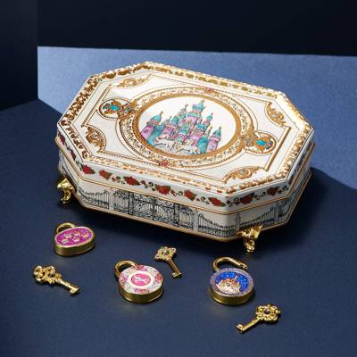
11/05 15:00 ❓ 不明株式会社ビーディ・ラボのプレスリリース 青山デカーボから、クリスマスのときめきを詰め込んだ「クリスマス限定缶」を2026年11月
株式会社セブン‐イレブン・ジャパンのプレスリリース ～地域の子どもたちと開発した商品をはじめ、長野県・山梨県の食材を生かした商品
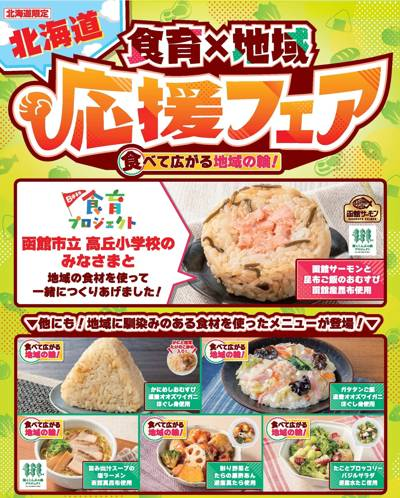
11/05 15:00 🚄 北海道株式会社セブン‐イレブン・ジャパンのプレスリリース ～地域の子どもたちのアイデアを生かした商品をはじめ、北海道で馴染みのある味わ
ミニストップは、２０１０年発売のロングセラー商品「クランキーチキン うま塩味・辛旨味 」を、２０２６年１１月６日（金）から１１月
株式会社セブン‐イレブン・ジャパンのプレスリリース ～地域の子どもたちのアイデアを生かした商品をはじめ、静岡県で馴染みのある味わ
パティスリー洛甘舎のプレスリリース 京都のパティスリー洛甘舎は、楽天市場に新たに出店しております。「抹茶テリーヌ」好評発売中！
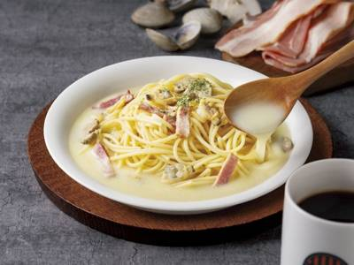
11/05 14:00 ❓ 不明タリーズコーヒージャパン株式会社のプレスリリース タリーズコーヒージャパン株式会社（本社：東京都新宿区、代表取締役社長：内山修二
株式会社永谷園のプレスリリース 株式会社永谷園が販売するレトルトカレー商品「アンパンマンミニパックカレー ポークあまくち」が、
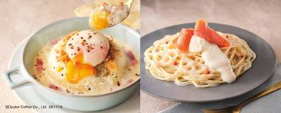
11/05 14:00 🚄 北海道株式会社ドトールコーヒーのプレスリリース 2026年11月19日（木）より発売 株式会社ドトールコーヒー（本社：東京都渋谷区、代
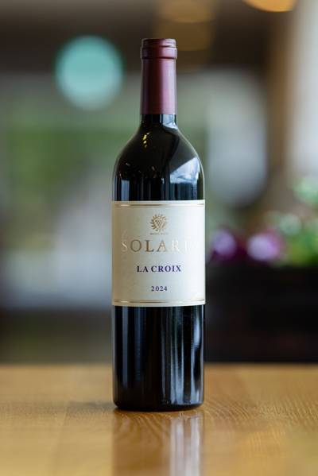
11/05 13:43 🚄 長野マンズワイン株式会社のプレスリリース 高温多湿による病害の影響で多くの圃場が収量を落とす中、ぶどうの生育を見極め、収量と収穫タイ
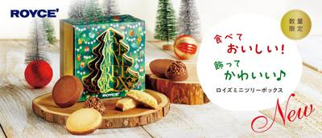
11/05 13:30 ❓ 不明株式会社ロイズコンフェクトのプレスリリース 株式会社ロイズコンフェクト（北海道札幌市）は、クリスマス限定商品を、2026年11月
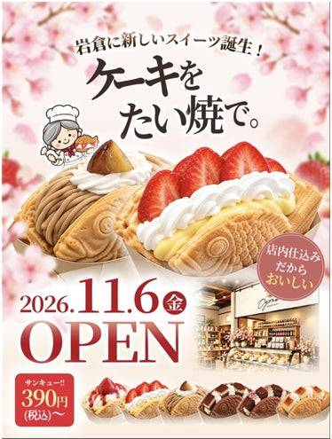
11/05 13:02 🚄 愛知株式会社米乃家のプレスリリース 創業1948年のたい焼き店が試作1,000回以上。ショートケーキ税込390円の「およね生ケーキサ
株式会社ロイズコンフェクトのプレスリリース 株式会社ロイズコンフェクト（北海道札幌市）は、いちごの甘酸っぱさとミルクのクリーミー
株式会社珠屋櫻山のプレスリリース ～特別な日を彩る甘くておいしいサプライズギフト～ 株式会社珠屋櫻山(本社：東京都中央区、代表取
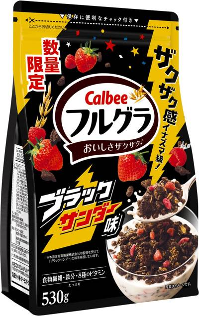
11/05 13:00 🌐 全国カルビー株式会社のプレスリリース 2026年11月9日（月）から全国で数量限定発売 カルビー株式会社(本社:東京都千代田区、代表
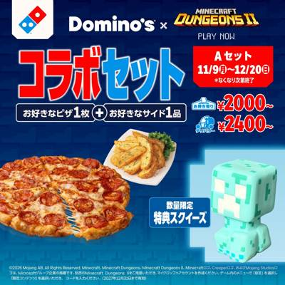
11/05 13:00 ❓ 不明株式会社ドミノ・ピザ ジャパンのプレスリリース ～ピザを食べ、ドミノ・ピザ スキンに着替え、大冒険に出よう～ 株式会社ドミノ・ピ
株式会社湖池屋のプレスリリース 北海道を味わう！2種類のフレーバー！ 株式会社湖池屋（社長：佐藤章）は、北海道生まれの新品種“ゆ
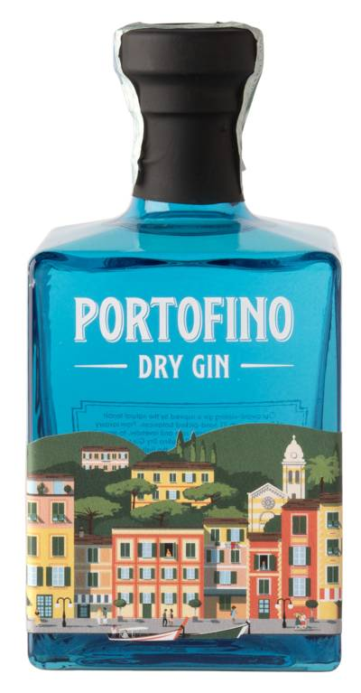
11/05 12:52 ❓ 不明株式会社フードライナーのプレスリリース PORTOFINO DRY GIN イタリア北西部の美しい港町「ポルトフィーノ」で生まれ
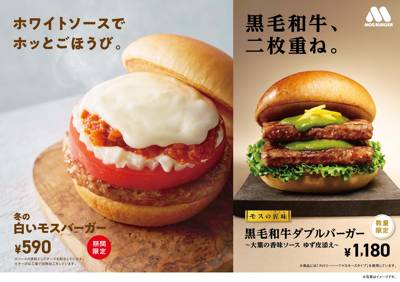
11/05 12:10 ❓ 不明株式会社モスフードサービスのプレスリリース 2026年11月11日（水）から期間・数量限定で販売 モスバーガーを展開する株式会社
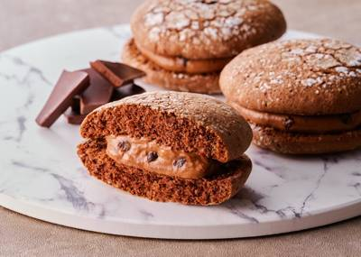
11/05 11:05 ❓ 不明株式会社亀屋万年堂のプレスリリース 【2026年11月10日発売】とろける食感と濃厚なチョコレートクリームを使用した冬限定のフレ
株式会社山本商店のプレスリリース 11月6日(金)～30日(月)「BLACK FRIDAY」を開催。期間中は、毎週登場する特別な
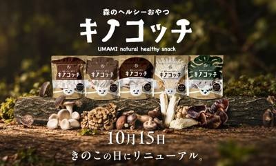
11/05 11:02 🚄 沖縄株式会社AlgaleXのプレスリリース しいたけ農家発の九州の自然食品店×泡盛粕から藻を育てる沖縄のスタートアップ 森のヘルシー
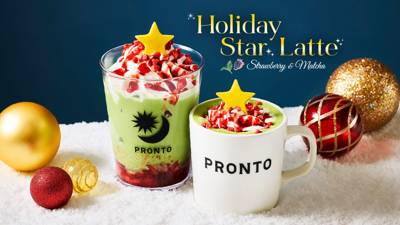
11/05 11:00 ❓ 不明株式会社プロントコーポレーションのプレスリリース 宇治抹茶×ストロベリーで楽しむ「ホリデースターラテ」2種を11月19日(木)よ
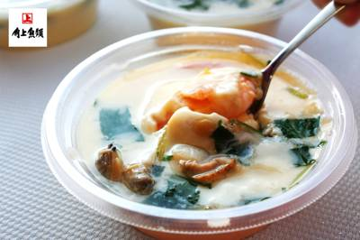
11/05 11:00 🚄 新潟角上魚類ホールディングス株式会社のプレスリリース 海鮮具材がたっぷり。角上魚類の手作り茶わん蒸し 鮮魚専門店「角上魚類」を展開す
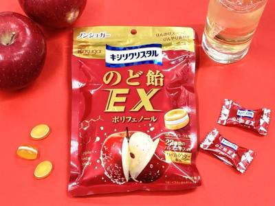
11/05 11:00 🚄 愛知春日井製菓株式会社のプレスリリース 11月9日（月）より全国の一部コンビニエンスストアで発売 松浦亜弥さん出演WEB CM公開中
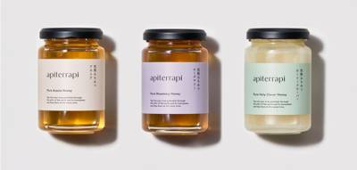
11/05 11:00 ❓ 不明株式会社 山田養蜂場のプレスリリース 株式会社山田養蜂場（本社：岡山県苫田郡鏡野町、代表：山田英生）が運営する循環型コスメブラン
株式会社庫やのプレスリリース 公式オンラインショップ限定福袋2026年11月8日（日）より受付開始 コロワイドグループのチーズ
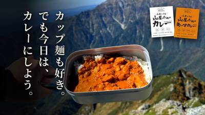
11/05 11:00 ❓ 不明SOPHOLA株式会社のプレスリリース 信州の素材と、山行のための栄養設計。松本大学・地元食品会社CEFCOと1年以上かけて共同
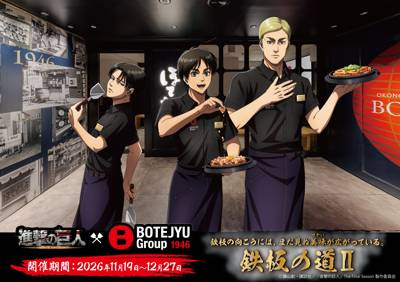
11/05 11:00 🚄 大阪BOTEJYU Group ホールディングス株式会社のプレスリリース 印象的なシーンやキーワードをモチーフにしたコラボメニュー、
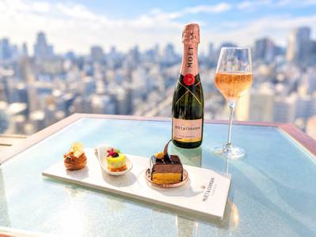
11/05 11:00 ❓ 不明三菱地所ホテルズ＆リゾーツ株式会社のプレスリリース クリスマス装飾で彩られるラウンジでロゼシャンパンとアミューズを堪能 ロイヤル
株式会社JFLAホールディングスのプレスリリース 株式会社JFLAホールディングス（本社：東京都中央区、代表取締役社長：檜垣周作
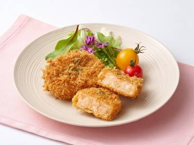
11/05 11:00 🚄 博多井筒まい泉株式会社のプレスリリース 井筒まい泉株式会社（本社：東京都港区、代表：千 大輔）は2026年11月11日（水）より「博
新日本化成株式会社のプレスリリース 健康食品・飲料の卸売事業者、小売店、ドラッグストア、美容・健康関連施設などを対象に、卸価格・
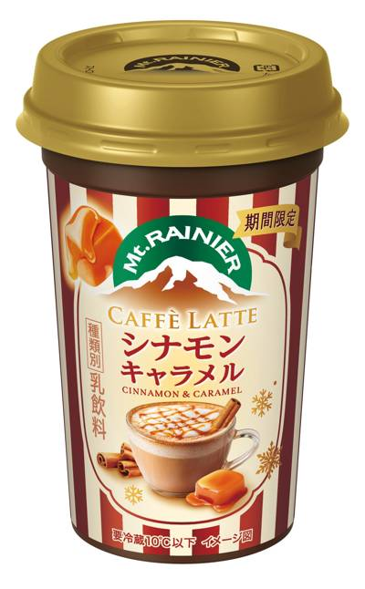
11/05 11:00 🌐 全国森永乳業株式会社のプレスリリース 森永乳業は、チルドカップコーヒー売上No.1ブランド※1「マウントレーニア」から、「マウント
日本ケンタッキー・フライド・チキン株式会社のプレスリリース 日本ケンタッキー・フライド・チキン株式会社(社長：名嶋 篤史、本社
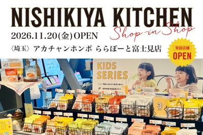
11/05 10:00 🚄 埼玉株式会社にしき食品のプレスリリース 「世界の料理を『カンタン』に。」をコンセプトに掲げ、レトルトカレーを中心に約120種類のレト
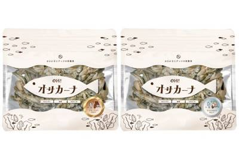
11/05 10:00 🚄 宮崎有限会社九南サービスのプレスリリース 小魚とアーモンドにチョコレートを合わせた秋冬のおやつ「ビターチョコ仕立て」「ホワイトチョコ
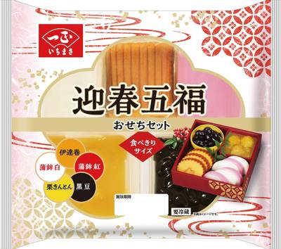
11/05 10:00 ❓ 不明一正蒲鉾株式会社のプレスリリース “たくさんはいらない…でも、お正月のごちそうは楽しみたい” そんなおせちニーズに最適な新商品
株式会社成城石井のプレスリリース 〜旬のりんごを使った自家製惣菜や濃厚チーズフォンデュ、ピッツァ、チーズ、ワインなど、物価高を背
株式会社LacuSのプレスリリース 続けるほど割引率が上がり、最大20%オフがずっと続く。より続けやすく、よりお得な新定期便「M
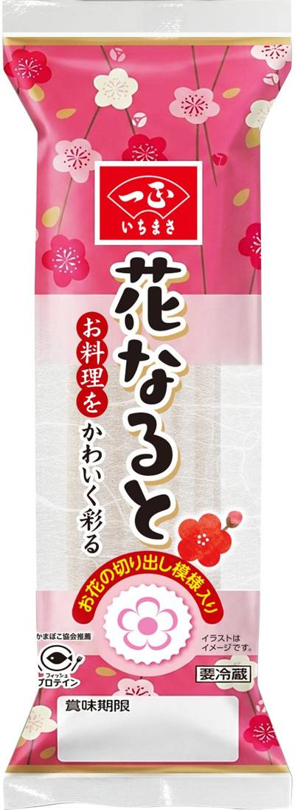
11/05 10:00 🌐 全国一正蒲鉾株式会社のプレスリリース 一正蒲鉾株式会社(本社所在地：新潟県新潟市東区、代表取締役 社長執行役員：野崎正博)は、お花の
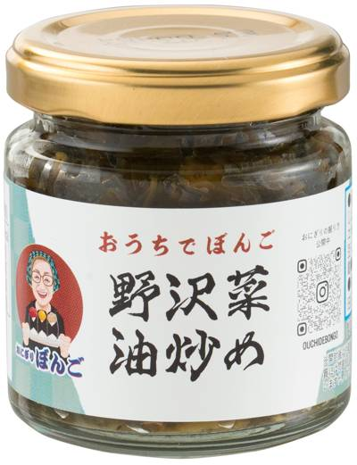
11/05 10:00 ❓ 不明エステールホールディングス株式会社のプレスリリース 「野沢菜油炒め」「葱とおかか」「ぼんごの塩」を販売。スタッフ考案のアレンジレ
株式会社ライフコーポレーションのプレスリリース サーモンとハンバーグ、2種の彩り豊かな洋風メニューが登場♪ “おいしい” “ワ
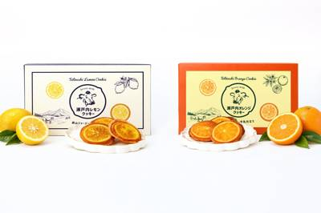
11/05 10:00 ❓ 不明株式会社ドウシシャのプレスリリース 「瀬戸内レモンクッキー 6枚入」と「瀬戸内オレンジクッキー 6枚入」 生活関連用品の企画・
カンロ株式会社のプレスリリース ～みたらし感じる「しょこら味」？意外な組み合わせが生む、クセになるおいしさ～ カンロ飴やピュレグ
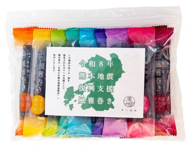
11/05 10:00 🚄 熊本株式会社風雅のプレスリリース 復興支援商品の売上の一部と、お客様・お取引先様からの義援金を熊本県へ 風雅巻き復興支援パック（18
株式会社ハートのプレスリリース 株式会社ハート(代表取締役社長：鍛治 慎次郎、本社：愛媛県松山市)は、人気菓子シリーズ「4Dグミ
株式会社イノベントのプレスリリース 食品加工・包装機器から商品開発、店舗DX、海外展開支援まで、食品ビジネスの課題に応える見どこ
株式会社お亀堂のプレスリリース 朝にこんがり焼き上げ、紙の袋で店頭へ。消費期限2日間、1個280円。老舗和菓子店が、焼き方と届け
株式会社浜友Ｅ.Ｆ.のプレスリリース 屋上BBQなどのテナントが入る複合商業施設「楽園タウン池袋」に入る、人気ラーメン店「むかん
合同会社横浜ピア8ホスピタリティのプレスリリース 横浜・みなとみらいのウォーターフロントに位置するラグジュアリーホテル「インター
株式会社焼肉坂井ホールディングスのプレスリリース ～ 韓国グルメフェア、秋・冬の新メニューなど、1組様につき15品ほどお楽しみく
株式会社モンテローザのプレスリリース リニューアルオープンを記念して、11月6日（金）・7日（土）の2日間限定で、店内飲食のメニ
株式会社 江戸清のプレスリリース ”ブタまん”から”黒毛和牛すき焼きまん”まで個性豊かな6品がエントリー！食べたことがなくても予
株式会社幸楽苑のプレスリリース 株式会社幸楽苑（本社：福島県郡山市）が運営する「幸楽苑」は、2026年11月27日（金）のブラ
電解質ドリンク「Precision Fuel & Hydration（プレシジョンフューエル&ハイドレーション）
みちのくコカ･コーラボトリング株式会社のプレスリリース リサイクルや海ごみ対策への取り組みおよび普及啓発、海岸漂着物地域対策推進
GET株式会社のプレスリリース ～4年分の感謝を込めたスペシャルプライス～ 4周年記念らぁ麺500円 GET（ゲット）株式会社が
株式会社セブン‐イレブン・ジャパンのプレスリリース ～小学生のアイデアから生まれた商品が完成～ 株式会社セブン‐イレブン・ジャ
株式会社クオカードのプレスリリース 手間なく贈れて気持ちが伝わるデジタルギフト『QUOカードPay（クオ・カード ペイ）』 株式
JA全農の産直通販JAタウンのプレスリリース ＪＡ全農が運営する産地直送通販サイト「ＪＡタウン」の長野県ショップ「僕らはおいしい
株式会社サガミホールディングスのプレスリリース ～味の民芸の歴代人気メニューが勢揃い！あなたの「また食べたい！」「食べてみたい！
株式会社リエイのプレスリリース 金沢発の冷凍ピザブランド「モリナポ」（製造・販売 株式会社森山ナポリ：石川県金沢市三池町 代表取
株式会社長寿荘のプレスリリース 【早割特典】11月30日（月）までの早期ご予約がお得！職人が贈る限定クリスマスケーキや贅沢チキン
角上魚類ホールディングス株式会社のプレスリリース JLPGA樋口久子 三菱電機レディスゴルフトーナメント今季4勝目達成！通算8勝
株式会社安楽亭のプレスリリース 株式会社安楽亭（本社：埼玉県さいたま市）が運営する「焼肉レストラン安楽亭」「炭火焼肉 七輪房」「
株式会社浅野屋のプレスリリース 限定トートバッグ入り開業セットやノベルティ配布など、開店キャンペーンを開催 本リリースのポイント
株式会社エフリードのプレスリリース Instagram公式アカウントをフォローした方限定で、2026年11月10日(火)・11月
千葉県PRプロジェクトのプレスリリース 千葉県PRプロジェクトは、千葉県での落花生栽培150周年を記念し、“落花生王国・ちば”で
中外鉱業株式会社のプレスリリース グランド東京渋谷ビルにて2026年12月3日(木)オープン予定 キャラクターグッズの商品企画・
株式会社リディファインダイニングのプレスリリース 〆にも、好きなだけ。本場博多の「福さ屋の明太子」を心ゆくまで楽しめる全10品・
株式会社アハトのプレスリリース 愛知県産ブランド鴨「恵鴨」の煮込みと、糖度の高い二年熟成じゃがいもを使用。仕上げにラクレットチー
メルティングポットハラペコラボ株式会社のプレスリリース きらめく宝石の結晶を、職人の繊細な手仕事で表現。秋の美しさを味わう、11
株式会社ライテックのプレスリリース 看板フレーバー「宮古島産 濃厚マンゴー」をはじめ、沖縄を感じる全4種のジェラートを展開 喫煙
株式会社For Bridgesのプレスリリース For Bridges、米国の食の最前線で日本茶の新市場を開拓 LA Chef
ユーシーシーフードサービスシステムズ株式会社のプレスリリース ～3年目を迎える「神戸タータン」とのコラボレーション 神戸の街並み
トーヨーベンディング株式会社のプレスリリース 「ミル挽き珈琲」の抽出技術と伊藤園の厳選茶葉が融合。日本の伝統文化を日常に変える「
東武百貨店 池袋本店 8階催事場 東武百貨店 池袋本店では11月5日(木)から10日(火)までの6日間、「大長崎展」を開催します
株式会社ファクトセンスのプレスリリース 新たなシェフが参画。西麻布で培った料理の技術とデジタル技術で、子どもも大人もくつろげる日
心華やぐ季節にエシレからの贈り物 フランス産A.O.P.認定発酵バター「エシレ」の専門店 エシレ・ラトリエ デュ ブールから、
株式会社クリエイト・レストランツ・ホールディングスのプレスリリース ～ビジネス会食や訪日ゲストを迎える「和牛焼肉会席」。開業を記
INSTYLE GROUP株式会社のプレスリリース 寒鰤のカルパッチョ、嶺岡ジビエの猪肩ロースのグリルなど、晩秋の恵みを堪能する
株式会社 ネオ・エモーションのプレスリリース 晩秋のグルメが揃う＜―”茜色づく秋。かに祭”―＞フェアでは、本ずわい蟹を主軸に、ジ
株式会社 東京ドームホテルのプレスリリース 赤く艶やかな“大人かわいい”ティースタンド。定番のショートケーキから苺とトマトの冷製
C-United株式会社のプレスリリース コロワイドグループのC-United株式会社（本社：東京都港区、代表取締役社長：友成
株式会社ひらまつのプレスリリース 株式会社ひらまつ（本社：東京都渋谷区、代表取締役社長CEO：三須 和泰、以下 ひらまつ）は、2
株式会社SAKIGAKEホールディングスのプレスリリース オープン初日は「全部のせトッピング無料」、翌日は「お子様つけ麺無料」！
ノーラン・エステートサービス株式会社のプレスリリース 農家直送の野菜と和食材を、カフェメニューに再編集。日常にも旅の途中にも、ひ
大正製薬株式会社のプレスリリース ～色々なシーンを想起させる音の可能性を検証～ 大正製薬株式会社（以下、当社）は、日本音響研究所
株式会社グレープストーンのプレスリリース 2026年11月11日(水)～17日(火)まで期間限定OPEN 株式会社グレープストー
株式会社コミットグロースのプレスリリース てつなぎ×北海道十勝の光農産業、生活者の声を商品開発へ活用 子育てコミュニティメディア
株式会社リロバケーションズのプレスリリース ワンちゃん用ケーキやごちそう、乾杯ドリンクなどの特典付き “想いをつむぎ、新しさでつ
パルシステム生活協同組合連合会のプレスリリース 生産者やメーカーなど191人が参加 パルシステム連合会（東京都新宿区、理事長：渋
チョコレートデザイン株式会社のプレスリリース チョコレートデザイン株式会社（代表取締役：大槻昌弘、本社所在地：横浜市）が運営する
株式会社JFLAホールディングスのプレスリリース 株式会社 JFLA ホールディングス（本社：東京都中央区、代表取締役社長：檜垣
ジローレストランシステム株式会社のプレスリリース 東武百貨店 池袋本店「リストランテ マキャベリ」にて12月1日（火）～12月2
ニラックス株式会社のプレスリリース 【ご提供期間】2026年11月11日（水）～ 2027年1月11日（月） ペルティカのHPは
株式会社南部食鶏のプレスリリース 極上の素材が織りなす「4つの旨み」お歳暮や冬ギフトにおすすめの贅沢なお取り寄せ鍋を体験・発信
SRSホールディングス株式会社のプレスリリース 「ジューシームネからあげオリジナルカップ」をオープンから3日間限定販売！ 鶏笑
一般社団法人青森県りんご対策協議会のプレスリリース りんごのポリフェノールと発酵性食物繊維に着目 一般社団法人青森県りんご対策
西日本高速道路株式会社のプレスリリース ～秋のドライバー応援企画でお得がいっぱい！～ 西日本高速道路サービス・ホールディングス株
株式会社アクリルコンプレックスのプレスリリース 株式会社アクリルコンプレックス（本社：東京都江戸川区、代表取締役：江藤隆仁）は、
コープデリ生活協同組合連合会のプレスリリース ～壬生町との包括連携協定に基づく取り組み ／ 行政・教育機関と連携し子どもたちの安
キリンホールディングス株式会社のプレスリリース キリンビール株式会社（社長 堀口英樹）とキリンビバレッジ株式会社（社長 井上一
合同会社クアッガのプレスリリース パンの通販・廃棄ロス削減サービス「rebake（リベイク）」を運営する合同会社クアッガ（本社：
一般社団法人 日本最適化栄養食協会のプレスリリース 令和8年 熊本地震で被災した子どもたちの学校給食を支援 33種類の栄養素とお
株式会社N・Iのプレスリリース ～牡丹海老造り、刺身4点盛り、名物かに出し巻きまで全10品。飲み放題付き通常15,000円が、1
とくさと-ふるさと納税還元率ランキング-のプレスリリース ふるさと納税還元率比較サイト【とくさと】 ふるさと納税返礼品の還元率を
株式会社FOOD & LIFE COMPANIESのプレスリリース https://food-and-life.co.j
株式会社ｐｅａｃｅ ｐｕｔのプレスリリース 東南アジア2店舗目はインドネシアへ。地元食材を使用した限定新作ドーナツも多数登場 日
東急ホテルズ＆リゾーツ株式会社のプレスリリース 詳細を見る 富山エクセルホテル東急（JR富山駅より徒歩3分 富山市新富町、総支配
株式会社コメダのプレスリリース 全国でフルサービス型の喫茶店を展開する株式会社コメダ [本社：愛知県名古屋市、代表取締役社長：甘
株式会社ホットパレットのプレスリリース 今年も頑張った自分へご褒美を。冬に贈るジューシーなプレミアムステーキ 株式会社ホットパ
三井不動産リゾートマネジメント株式会社のプレスリリース 世界大会は2027年1月24日（日）・25日（月）にフランス・リヨンにて
株式会社ピー・エス・コープのプレスリリース 芳醇な香りのラ・フランスをはじめ、旬の味覚を堪能する限定タルトをバラエティ豊かにご用
アイコニア・ホスピタリティ株式会社のプレスリリース ホテルノルド小樽（所在地：北海道小樽市、支配人：平賀治郎、以下当ホテル）は
 11/05 15:00
❓ 不明
11/05 15:00
❓ 不明
コープデリ生活協同組合連合会のプレスリリース コープデリ生活協同組合連合会（本部：埼玉県さいたま市、代表理事理事長：熊﨑 伸、会
株式会社伊藤園のプレスリリース 心と体を満たす菌活ブランド「BLOOM Deli」第二弾 水と混ぜてレンジで2分！手軽さ・美味し
株式会社57のプレスリリース 2020年10月に東京で開業、現在は関東（東京・神奈川・埼玉・群馬・栃木）、東北（宮城）、関西（大
株式会社クリエイト・レストランツ・ホールディングスのプレスリリース 株式会社クリエイト・レストランツ・ホールディングスのグループ
株式会社雨風太陽のプレスリリース 〜HANAMAKI BASEを核に、住民と関係人口が共に地域を担う「関係自治モデル花巻」の構築
東洋ライス株式会社のプレスリリース 北海道音威子府村（村長：遠藤貴幸、以下「音威子府村」）と東洋ライス株式会社（本社：和歌山県和
株式会社トライ・インターナショナルのプレスリリース サンパウロの商業施設 Shopping Plaza Sul へ出店現地パート
株式会社トライ・インターナショナルのプレスリリース 料理人やバイヤーなど100名超が来場地域性を生かした調味みそを通じて味噌の新
株式会社相州村の駅、小田原大雄山線 駅舎カフェ1の1／駅舎プリンのプレスリリース ～守谷食パンのフレンチトースト2種と ワンハン
ロイヤルホールディングス株式会社のプレスリリース ～アメリカンピザパーラーらしい多彩な味わいを、心ゆくまで食べ比べ～ ロイヤル
電通報のプレスリリース [電通報] はdentsu Japanが運営する情報メディアサイトです。 社会課題・マーケティング・経営
東急ホテルズ＆リゾーツ株式会社のプレスリリース 予約期間 ： 2026年11月5日（木）～12月16日（水） お渡し日時 ： 2
株式会社ユニシアホールディングスのプレスリリース ～予約受付中！～ 株式会社ユニシアホールディングス（本社：東京都品川区東五反田
オハヨー乳業株式会社のプレスリリース ～オハヨー濃（こい）『名店が選ぶ理由』篇～ オハヨー乳業株式会社（本社:岡山県岡山市、代表
株式会社長寿荘のプレスリリース 3Fトラットリア・イル バンカーレのフリードリンク付パーティープラン 『ホテルテラスザガーデン水
株式会社モスフードサービスのプレスリリース 11月11日（水）から全国のモスバーガーで期間限定販売 モスバーガーを展開する株式会
株式会社 ジャパネットホールディングスのプレスリリース 〜巨匠・片岡護シェフ監修イタリアンから、幻想的なホワイトクリスマス・アフ
国際興業株式会社のプレスリリース パティシエ自慢の定番ケーキや2026年新作のスペシャリテをご用意 国際興業グループの富士屋ホテ
Agro Ludens株式会社のプレスリリース 米由来マイコプロテインComeat®と米シロップの活用提案を強化 Agro Lu
日本ホテル株式会社のプレスリリース 旬の食材を贅沢に楽しむ特別なひととき ホテルニューグランド（横浜市中区山下町10番地／総支配
株式会社ココトモファームのプレスリリース ～受け取り用のURLを送るだけ。受け取った方が、米粉バウムクーヘンなどの中からお好きな
株式会社ポトマックのプレスリリース 四季の移ろいを感じる果実たっぷりのタルトや、しっかり焼きこんだ素朴なお菓子たちをお届けしてい
オイシーズ株式会社のプレスリリース 宮城県内で親しまれて16年。待望の中心地「仙台駅前エリア」へ出店！ 人気飲食店であるつけ麺「
レッドロブスタージャパン株式会社のプレスリリース 11月4日(水)よりレッドロブスター19店舗で数量限定販売 アメリカ発祥のシー
日本生活協同組合連合会のプレスリリース 災害への備えを「意識している」は65.0％、「子ども用の備蓄ができている」は22.6％
カネカQ10果実グミPR事務局のプレスリリース ～30代以降は間食や息抜きに「ながらケア」を求める傾向も～ 株式会社カネカ（本
～腸内細菌と睡眠をつなぐ経路の一端を特定 睡眠研究の新たな手がかりに～ 雪印メグミルク株式会社（本社：東京都港区、代表取締役社長
Gigi株式会社のプレスリリース 11月16日より、一人あたり期間中最大5,000円分利用できるデジタル食事チケットを提供 Gi
株式会社オンワードホールディングスのプレスリリース ～ひつじのコスチュームをまとった「も～たろー」ぬいぐるみチャームも初登場～
株式会社アトムのプレスリリース 2026年11月10日（火）9:00から抽選販売のWEB予約開始 コロワイドグループの株式会社ア
株式会社パルコのプレスリリース 仙台PARCOは、2026年12月から2027年1月にかけて仙台PARCO２レストランフロア「パ
株式会社アトムのプレスリリース 2026年11月10日（火）9:00から抽選販売のWEB予約開始 コロワイドグループの株式会社ア
株式会社 村上農園のプレスリリース 2026年5月から10月まで6カ月連続で最高売上を更新 発芽野菜の国内シェアNo.1(※１)
株式会社ニッカネのプレスリリース 仕入先メーカー・行政関係者・社員ら約400名が出席 食を支える半世紀の歩みを振り返る 創業50
株式会社グレープストーンのプレスリリース 2026年11月12日(木)阪神梅田本店にて期間限定販売 株式会社グレープストーン(本
サーラ不動産株式会社のプレスリリース ジビエ、地酒、秘境の茶、味噌の食べ比べなど、地域の食のつくり手が車内で魅力を解説。373系
株式会社山田屋のプレスリリース シンガポール「FOOD JAPAN 2026」の山田屋ブースと髙辻孝将常務取締役 1867年（慶
アニーニ合同会社のプレスリリース 格別なおいしさ、栄養への理解、そして確かめられる品質。 the Simple Food co.
株式会社京阪流通システムズのプレスリリース 「Clarks」「リンツ ショコラ ブティック」がNEW OPEN！ 「デリス タル
マルトモ株式会社のプレスリリース 子どもたちの健全育成と地域スポーツ振興を支援！ かつお節・だしと、海洋資源を通じて健康と食文化
株式会社グレープストーンのプレスリリース 2026年11月13日(金)～11月24日(火)まで 株式会社グレープストーン(本社：
有限会社どんど焼本舖のプレスリリース 蜜の魅力を菓子とドリンクで楽しむ、新たな旗艦店が誕生。焼きたての「絹どら」とオリジナル蜜シ
森永乳業株式会社のプレスリリース 森永乳業は、カップアイス「MOW（モウ)」シリーズより、おなじみの「MOW（モウ)」ロゴが「
兼松株式会社のプレスリリース 兼松株式会社（以下「兼松」）は、株式会社TOWING（以下「TOWING」）と連携し、J-クレジッ
アイビーカンパニー株式会社のプレスリリース 2026年11月10日（火）～2027年1月13日（水） アイビーカンパニー株式会社
株式会社ポトマックのプレスリリース 12月24日（木）、25日（金）限定のクリスマスコース。本日よりご予約受付開始！ 神戸・三宮
有限会社ナチュラルスマイルのプレスリリース ピザ作り20年以上の社長が毎朝4店舗分の生地を手作り。北海道産小麦「ゆめちから」と全
アークランドサービスホールディングス株式会社のプレスリリース じっくり煮込んだ黒いカレールーに牛肉をふんだんに盛り込んだ「黒いビ
株式会社SAKIGAKEホールディングスのプレスリリース 背脂のコクとパンチがクセになる「背脂生姜肉中華そば」が新登場！ 202
株式会社ロイスダールのプレスリリース 2026年11月より全国のロイスダールで季節限定販売 1923年創業、日本で初めてチョコレ
株式会社Fireのプレスリリース 2２歳が創業。大学に行かず三つ星の厨房で4年働いた代表が、「見て盗むしかない時間」を短くするた
株式会社ロッテのプレスリリース 〜沖縄県立豊見城高校の生徒が、マクロミル社の消費者購買履歴データを分析し、マーケティング戦略を立
株式会社紫野和久傳のプレスリリース 牛サーロインに松茸と無花果を合わせて。季節の移ろいを一椀ごとに楽しむ「季のあわい鍋」 和久傳
株式会社赤ちゃん本舗のプレスリリース 株式会社赤ちゃん本舗（本社：大阪市中央区 https://www.akachan.jp）は
株式会社セイコーマートのプレスリリース 北海道発祥のコンビニ セイコーマートの宅配専用冷凍おせち。 送料無料で全国にお届けします
株式会社グルスタのプレスリリース 飲食店の採用支援700社超のグルスタと、店舗管理システム導入9,000店舗以上のアスピットが登
ウッドデザインパーク株式会社のプレスリリース お客様の声でリニューアル！これまでお祝い向けに提供していた「めで鯛コース」を、新た
株式会社梅の花グループのプレスリリース ＜商品販売期間＞2026年12月２日(水)～12月31日(木) 現在、全国の百貨店・ＳＣ
株式会社資さんのプレスリリース 資さんうどんは、味の追求とサービスの向上を目的とした従業員参加型の店舗研修『資さん塾』を新たにス
中外鉱業株式会社のプレスリリース Chugai Grace Cafe 渋谷店、大阪店にて2026年12月3日(木)〜12月30日
株式会社JR東日本クロスステーションのプレスリリース 愛らしい姿をモチーフにしたアイテムが勢揃い！ここでしか味わえない限定商品も
ネスレ日本株式会社のプレスリリース 新製品「バリスタ kotone」の4つの個性を表現した特別席が登場 4種のオリジナルスイーツ
味の素AGF株式会社のプレスリリース 《「ブレンディ®カフェラトリー®」 スティック》発売10周年！17種類から選ぶ”あなただけ
株式会社マルヤナギ小倉屋のプレスリリース 2026年11月6日(金) 14:00～17:00 Tokyo Innovation
日進畜産工業株式会社のプレスリリース 創業大正五年（1916年）日進畜産工業株式会社は、110周年を記念して「日進ワールドデリカ
株式会社ＣＲＯＳＳＡＳＩＡのプレスリリース 定番の花茶と果茶、中国茶、ブレンドティー、寧々の五福茶まで、お茶は全16種類。オリジ
株式会社PAPABUBBLEのプレスリリース 予約不要のキャンディカット体験や、オープン記念の限定グッズ・キャンディも登場 C
株式会社ケイシイシイのプレスリリース 東京発あんバタースイーツ専門店「岡田謹製 あんバタ屋」（株式会社ケイシイシイ、本社北海道
カルビー株式会社のプレスリリース ～2027年のアイデア実現を目指す～ カルビー株式会社（本社：東京都千代田区、代表取締役社長：
アサヒビール株式会社のプレスリリース アイナ・ジ・エンド、XG、STUTS、マカロニえんぴつなど豪華アーティストが出演 アサヒ
株式会社モスフードサービスのプレスリリース 11月11日（水）から全国のモスバーガーで期間限定販売 モスバーガーを展開する株式会
株式会社ALGONAのプレスリリース ・畜産が盛んな北海道・別海町産の発酵バターと生キャラメルソースを主原料に使用 ・封を開けた
オリオンビール株式会社のプレスリリース Tシャツなどのコラボグッズも登場！11月7日・8日の「ゴリ★オキナワフェス2026」で先
株式会社マッシュホールディングスのプレスリリース 子どもたちに最高の笑顔を届ける参加型チャリティイベントを11月6日(金)・7日
株式会社サテライトジャパンのプレスリリース 全国各地の個性あふれるプリンの中から”今一番食べてみたいプリンNo1を決定する”総選
Bistro&Crêperie Le Pépinのプレスリリース 「フランス・ブルターニュ産そば粉を日本へ」の想い 単身
株式会社アイスクリーム・ラバーのプレスリリース 「冬のあいぱく® Premium TOKYO 2026」会場コンテンツを一挙公開
APAMAN株式会社のプレスリリース 11月20日（金）開幕！ドイツ・ザイフェン村の木工雑貨や人気のノーム人形、シュタイフの限定
日本ホテル株式会社のプレスリリース 2026年12月1日（火）～2027年2月28日（日）の期間限定で提供 東京の躍動感や波長
味の素株式会社のプレスリリース 味の素株式会社(本社：東京都中央区、代表執行役社長：中村 茂雄)は、「ピュアセレクト®︎」ブラン
霧島市のプレスリリース OTAふれあいフェスタ2026 鹿児島県霧島市公式アンテナショップである“じゃっど☆ラボ”が、東京都大田
株式会社ケリングジャパンのプレスリリース 公式ウェブサイトおよび店頭にて販売開始 グッチ オステリア ダ マッシモ ボットゥーラ
APAMAN株式会社のプレスリリース 芝公園・新豊洲2つの会場を巡ってそろえる限定ピンバッジと、新豊洲限定・高さ2.4mの巨大ガ
市原市役所のプレスリリース 千葉県市原市では、11月14日(土)、15日(日)の2日間、市原市農業センターで「いちはら大収穫祭2
株式会社東急レクリエーションのプレスリリース 常設３スナック✕期間限定ママが登場するＰＯＰ－ＵＰスナックでにぎわいを創出します
オンラインスナック横丁文化株式会社のプレスリリース 企業との共創で、横丁全体を舞台にしたイベントも展開 日本独自のナイトカルチ
株式会社 生活の木のプレスリリース 生活の木ショップでも大人気のはちみつ「マヌカハニー」の生産者がニュージーランドより来日し、生
株式会社SIMPLE COMPANYのプレスリリース ホノルル・クッキー・カンパニー、2026年ホリデーコレクションを発表。「N
INVITATION (THAILAND) CO., LTD.のプレスリリース 茨城県が協賛に タイの人気店も常陸牛限定メニュー
ソルト・コンソーシアム株式会社のプレスリリース フランス刊行80周年を記念し、六本木ヒルズ52階「THE SUN & T
NPO法人みらいの学校のプレスリリース 伝説を更新！渋谷を行進！～500km超走って、コメ売って、人・街・食を“おむすび”したい
ピーコック魔法瓶工業株式会社のプレスリリース 「ピーコックのおうち居酒屋」シリーズから、魔法瓶酒器6アイテムを紹介。お酒の「おい
カフェ・カンパニー株式会社のプレスリリース 卵・乳製品・小麦粉不使用のクリスマスケーキ。全国どこでも、アレルギーをお持ちの方もヴ
長野県のプレスリリース 「おやきマップ」で食感と味わいを見える化し、たくさんある「おやき」の中からあなた好みのおやき探しをサポー
ボンディッシュ株式会社のプレスリリース ～支えるのは、JCTC2026で準決勝に進んだ焙煎士～ “おいしい一皿で絆をつなぐ”社
ヒルトン東京のプレスリリース ホテル内2か所のバー＆ラウンジで同時開催。ライブDJ、ジャズ、マジックで新しい年を迎えるエキサイテ
一般社団法人日本ワインブドウ栽培協会のプレスリリース JVA（日本ワインブドウ栽培協会）が主催。イタリア・カトリック聖心大学のス
ニッカホーム株式会社のプレスリリース 眠っていた老舗旅館を地域の観光拠点へ。紅葉、赤い橋「紅橋」、昭和レトロな旅館空間を舞台に、
SRSホールディングス株式会社のプレスリリース ～天丼4品ALL590円！大好評のキャンペーンを11月も開催します♪～ 590円
 11/06 06:00
❓ 不明
11/06 06:00
❓ 不明
有限会社北洋共同漁業部のプレスリリース 歴史的不漁の今こそ、鮭の魅力を伝えたい。“鮭離れ”を食い止めるため、知床の漁師たちが札幌
アイコニア・ホスピタリティ株式会社のプレスリリース アートホテル鹿島セントラル（所在地：茨城県神栖市、総支配人：野水崇司、以下
岡野食品株式会社のプレスリリース 愛知県にあるアピタ稲沢店内の ”マナレイア×GooZoo稲沢店” GooZooの世界観を表現…
株式会社京阪ザ・ストアのプレスリリース 入賞感謝セールを実施します！ 株式会社京阪ザ・ストア（本社：大阪市中央区 代表取締役：
ユナイテッド・スーパーマーケット・ホールディングス株式会社のプレスリリース ～ベストＰＲ賞をＷ受賞～ 株式会社いなげや(本社：
ベースフード株式会社のプレスリリース 完全栄養※1の主食等を開発・販売するベースフード株式会社（本社：東京都港区、代表取締役：橋
株式会社ケイシイシイのプレスリリース 小樽洋菓子舗ルタオが手がけるチョコレートスイーツ専門店「ヌーベルバーグ ルタオ ショコラテ
株式会社近鉄リテーリングのプレスリリース キービジュアル 株式会社近鉄リテーリングは、２０２６年１１月１０日（火）から１１月２６
丹（まごころ）の里活性化推進協議会のプレスリリース 農業法人数は5年で約33％増、新規就農者数は兵庫県下１位（2025年83人/
株式会社近鉄リテーリングのプレスリリース 株式会社近鉄リテーリングは、２０２６年１１月１０日（火）から１１月２６日（木）まで、中
丸大食品株式会社のプレスリリース ～従業員とご家族へ、日々の感謝を込めて～ 「食を通じて人と社会に貢献する企業」を目指す総合食品
琵琶湖汽船株式会社のプレスリリース 2026年12月31日（木）まで早割を実施いたします 琵琶湖汽船株式会社（本社：滋賀県大津
株式会社クリエイト・レストランツ・ホールディングスのプレスリリース 秋真っ只中！「美味しい味覚」がやってきます！ 兵庫・大阪・奈
コープデリ生活協同組合連合会のプレスリリース 〜 食べるしあわせ、自分らしいくらし「ともに」の力で、笑顔の明日を 〜 生活協同組
株式会社ハナウタカジツのプレスリリース 不足しがちな栄養素であるビタミンCやカルシウムを補給できる「種ごと丸ごときんかん」で手軽
株式会社ハイリスクのプレスリリース カニ・牡蠣・ホタテなど、海の恵みを炭火で味わう“海鮮セルフBBQ”。能登の美味しさと活気を全
ARTOOKのプレスリリース 小さなブックカフェ「ARTOOK / アートック」(住所：奈良県橿原市葛本町313-3 代表：森
株式会社イースト・デイリーのプレスリリース パートナー店舗が全国17〜19店舗へと拡大し、11月20日に羽田空港第2ターミナル地
株式会社マッシュホールディングスのプレスリリース 10色のボーダー柄ルームウェアを着たスヌーピーと仲間たちを描いたモナカがスペシ
株式会社札幌海鮮丸のプレスリリース 捌きたて！握りたて！の寿司を特別価格で提供いたします。その他お得な情報あります！ 日本最北端
株式会社近鉄・都ホテルズのプレスリリース シェラトン都ホテル大阪（所在地：大阪市天王寺区上本町6-1-55）は、2026年12月
株式会社トランジットホールディングスのプレスリリース 大切な人との特別なディナーから、仲間と楽しむ華やかな食事、心ときめくパティ
株式会社丸亀製麺のプレスリリース 讃岐うどん好き集まれ！楽しい体験が目白押し 原点と進化を堪能できる特別な一日 2026年11月
株式会社ノダキのプレスリリース 創業119年のノダキが食と健康を通じて地域と交流。全国のこだわり農産物や日本茶を販売し、自社で企
株式会社ニュートリベースのプレスリリース 藤木農林水産副大臣らが立ち会うなか、無味無臭の栄養パウダー「Ayo®」を使った菓子の共
ナッシュ株式会社のプレスリリース 〜「広告の外側にある、noshの素顔。」をコンセプトに、リアルな体験を通じたファン化を促進〜
株式会社あいプランのプレスリリース 少人数でも楽しめるケーキを札幌・旭川で予約販売 札幌では新作アソートや丸鶏ロースト、旭川では
MOTTAINAI BATON株式会社のプレスリリース レトルトカレーにより食品ロス削減を図るMOTTAINAI BATON株
株式会社ミツウロコグループホールディングスのプレスリリース チョコ好きには堪らない、濃厚なチョコレートジェラートにふんわりチョコ
株式会社Linnéのプレスリリース 【目標金額300万円】2026年11月20日（金）より支援受付開始予定。京都に根ざした酒造り
狭山市役所のプレスリリース 狭山市およびさやま大茶会実行委員会は、2026年11月8日（日）に、エミパーク狭山稲荷山（旧県営狭山
大名古屋ビルヂングのプレスリリース 2026年11月11日(水)～12月25日(金)予定 大名古屋ビルヂング(所在：名古屋市)は
株式会社Onfeetのプレスリリース 20年熟成のシングルカスク「Cask No.1144」から生まれた限定リキュール。第一弾1
濵田酒造株式会社のプレスリリース ～第1弾のゲストは若年層を中心に人気のクリエーターオカモトヒロヤ氏～ 新感覚のボタニカル系麦焼
Mr.LAND株式会社のプレスリリース GONNA DAYSの秋の実りとボージョレ・ヌーボーの特別なマリアージュで心身を満たす、
日田商会合同会社のプレスリリース 岩瀬酒造（千葉県）との共同開発。 辛口に想いを込めた贈り物の一本。 目白のギフトショップ「th
株式会社西武・プリンスホテルズワールドワイドのプレスリリース ～小諸の自然と造り手の想いが結実し世界へ挑戦する“最初の一杯”を、
軽井沢蒸留酒製造株式会社のプレスリリース シンガポール航空や西武HDとの連携を発表。ファーストリリースを記念し、11月6日はライ
株式会社Hot Podのプレスリリース 声優・南條愛乃さんと、ゆかりある京都の酒蔵「山本本家」が造る日本酒とのコラボレーション！
玉乃光酒造株式会社のプレスリリース シリーズ5に参加する全クリエイターも決定。日本酒とアートが交差する、新たな共創プロジェクトが
木内酒造株式会社のプレスリリース 木内酒造・八郷蒸溜所が手掛ける、新年を記念した限定ボトルが登場 木内酒造株式会社(茨城県那珂市
株式会社ヤッホーブルーイングのプレスリリース 北海道日本ハムファイターズ・清宮幸太郎選手ら10名のバットをアップサイクル 株式会
松井酒造合名会社のプレスリリース ～「倉吉」「松井」をはじめ、5種類のお酒の魅力をひと粒に。島根県・株式会社Muiとのコラボレー
水口酒造株式会社のプレスリリース – 世界有数の美食文化を持つモナコで、現地ソムリエが評価。純米大吟醸部門でGOLD
大関株式会社のプレスリリース 大関株式会社（兵庫県西宮市、社長：長部訓子）は、2027年の干支である「未（ひつじ）」をモチーフに
大関株式会社のプレスリリース 全国新酒鑑評会 金賞受賞酒を商品化 大関株式会社（兵庫県西宮市、社長：長部訓子）は、2026年5月
新里酒造株式会社のプレスリリース ～創業180年の沖縄酒蔵がつくる、亜熱帯沖縄が育んだシングルモルトジャパニーズウイスキー～ 沖
笹一酒造株式会社のプレスリリース 世界に誇る富士の清流を醸す日本酒「旦」と、日本を代表する「中華蕎麦 とみ田」による “日本の年
ポラリス・ホールディングス株式会社のプレスリリース ～1年をかけて集めた希少酒9種を飲み比べ～ ポラリス・ホールディングス株式会
osteria・tottoのプレスリリース 〜毎年、大人気のおせちも予約受付中〜 東京・西麻布の裏路地にある隠れ家イタリアン「o
 11/05 12:00
🗼 東京
11/05 12:00
🗼 東京
株式会社イードのプレスリリース 株式会社イード（本社：東京都中野区、代表取締役：宮川 洋、以下 イード）が運営するお酒の総合メデ
東急ホテルズ＆リゾーツ株式会社のプレスリリース ザ・キャピトルホテル東急（東京都千代田区永田町、総支配人：志村 恒治）では、20
株式会社トミオホールディングスのプレスリリース “千産千消”のグルメと音楽、役目を終えたコルクがアートに生まれ変わるワークショッ
株式会社Essence&co.のプレスリリース 高まる「夜カフェ需要」で話題沸騰！独自の点滴技術Rain Drop抽出と
株式会社ONDOホールディングスのプレスリリース 「おふろsakeナイト」は、埼玉の地酒と熱燗DJつけたろうさん監修のペアリング
合同会社ADWORKのプレスリリース 「SAKE DESIGN LAB」東京・三田で11月15日スタート 10種類の飲み比べから
DotDeli株式会社のプレスリリース ～飲み比べにグルメ、ステージや縁日も。友人と、家族と、水戸駅を巡って楽しもう！～ 202
株式会社 FS.shakeのプレスリリース 秘伝のかわ串や水炊きなど鶏料理を気軽に楽しめる大衆とり酒場が苫小牧に。3日間限定のオ
株式会社 Top Lotのプレスリリース 多数のプレミアムワインが一堂に オークションハウス『Top Lot』は第24回「ワイン
株式会社サドヤのプレスリリース 2024年に取得したサドヤ農場明野のシャルドネを使用したワインが金賞受賞。地域・教育機関・行政と
株式会社アップライジングのプレスリリース 超大吉「山崎18年」を前回の1口から2口へ増量！山崎12年・白州・響など全13銘柄をラ
キリンホールディングス株式会社のプレスリリース キリンホールディングス株式会社（社長 COO 南方健志、以下キリン）のパッケー
コア・コクボホールディングス株式会社のプレスリリース プロが避ける氷の特徴と、自宅で専門店の味に近づける手軽な工夫が明らかに コ
株式会社FOOD & LIFE COMPANIESのプレスリリース ＜11月5日（木）から全国の杉玉で販売開始＞ 株式
TAKEONE株式会社のプレスリリース 串なし炭火焼き鳥から地鶏料理まで、くつろぎの一席を TAKEONE株式会社(所在地：東京
株式会社WAKAZEのプレスリリース 「WAKAZE Tap Cocktails」として創業ブランドに統一。資金調達・自社工場新
音源: Drop It Like It’s Hot x Staying Alive
Small text, big feelings. Use it for an encouraging message, a hint at an announcement, or something your audience will relate to. Swap in your own text, and it works for any niche.
音源: Original audio
Battery at 1%? Not for long. Take your audience from 1% to 100% with a before and after that shows a glow-up, a mood switch, or an energy boost. It’s big in beauty and wellness, but it works for any transformation. Your recharge can be a best friend, a product, or a service.
News alert: toggle on. This is an easy way to tease an announcement, a news post, or a new series on your channel. It’s simple to recreate and works for any niche.